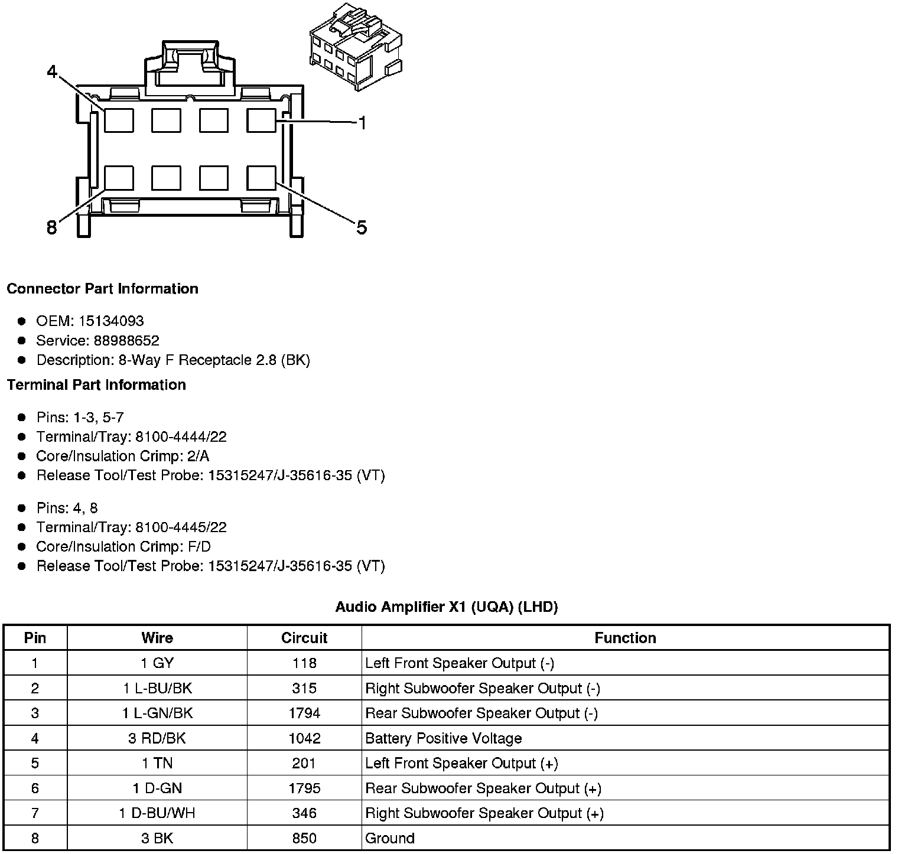
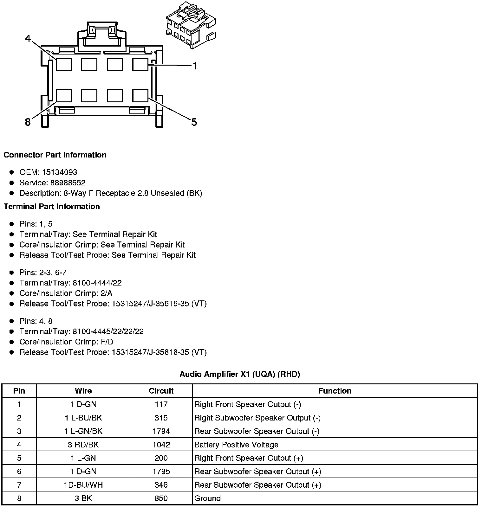
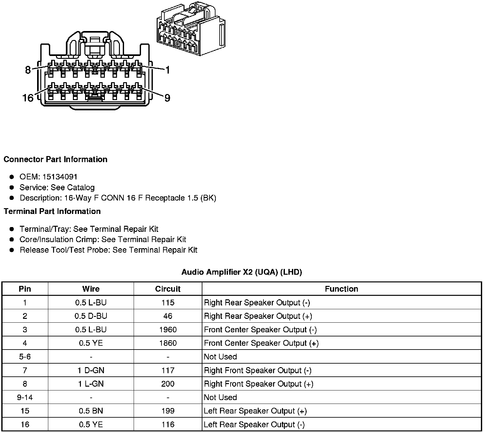
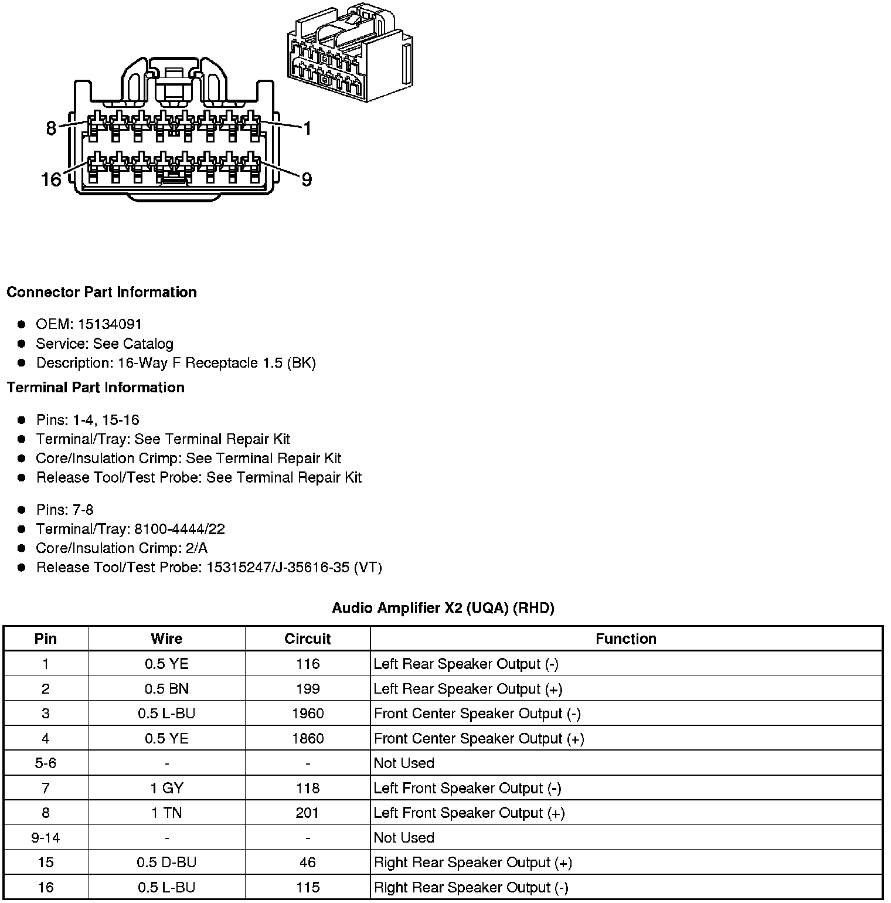
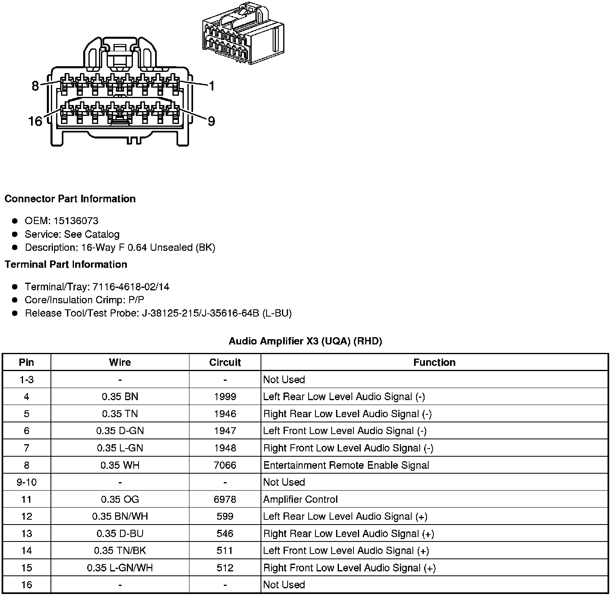
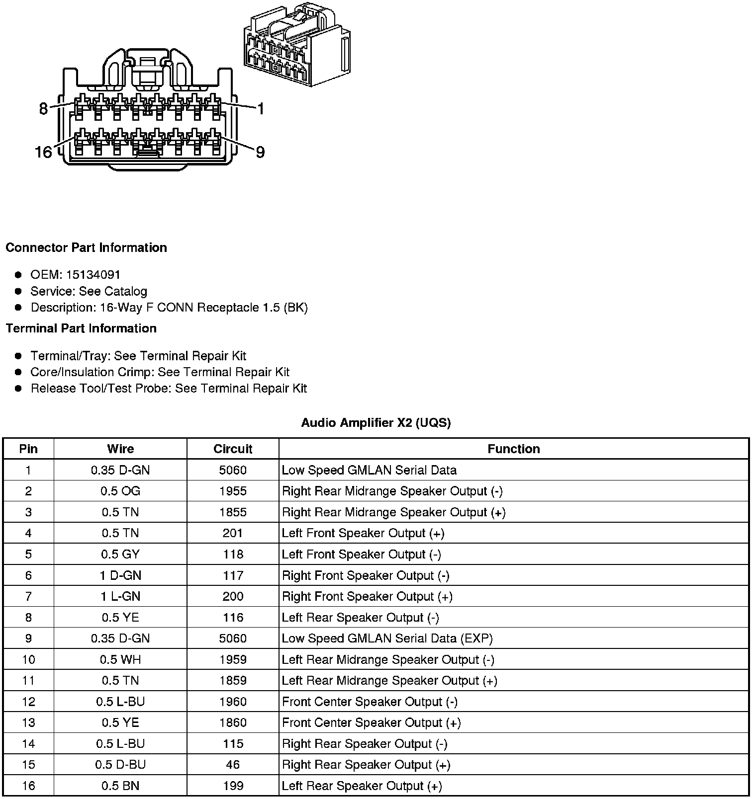
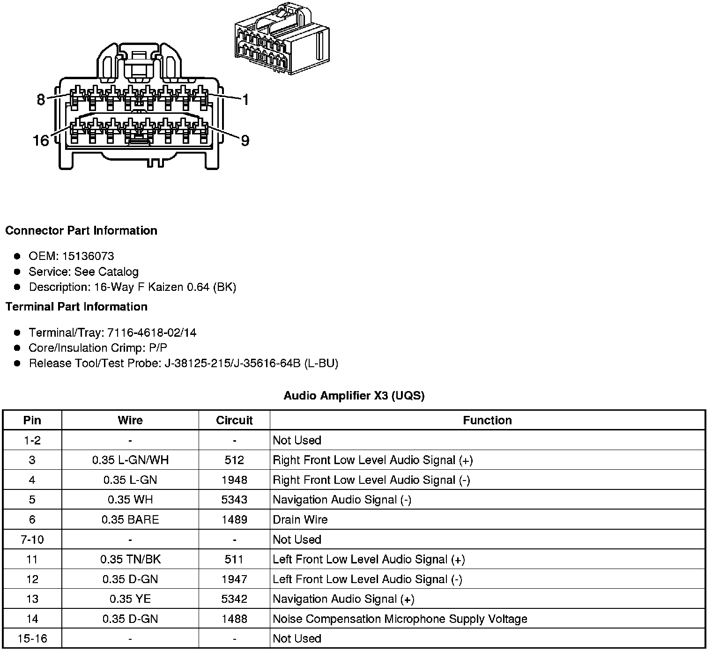
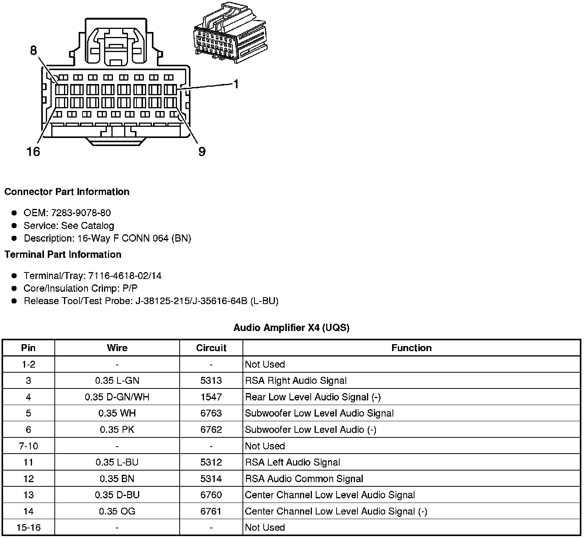

Amplifier: Diagrams
Component Connector End Views
Audio Amplifier X1 (UQA) (LHD)

Audio Amplifier X1 (UQA) (RHD)

Audio Amplifier X2 (UQA) (LHD)

Audio Amplifier X2 (UQA) (RHD)

Audio Amplifier X3 (UQA) (LHD)
Audio Amplifier X3 (UQA) (RHD)

Audio Amplifier X1 (UQS)

Audio Amplifier X2 (UQS)

Audio Amplifier X3 (UQS)

Audio Amplifier X4 (UQS)
